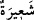

“
” hac kurbanlarıdır (hedy). Çünkü onlar haccın alâmet ve nişâneleridir.
Nitekim “Biz, büyük baş hayvanları da sizin için Allah’ın (dininin) işaretlerinden
(kurban) kıldık.” (el-Hacc, 22/36) âyeti bunu haber vermektedir. O halde bu tefsir,
sonraki âyetlere de en uygun olandır.
“
”, alâmet/nişan anlamındaki “
”nin çoğuludur. “Bedene’ye (Mekke’de
kurban edilecek deveye) “
” denmiştir. Çünkü, devenin hörgücünün sağ ve sol
yanlarından kan akıncaya kadar dürtülür. Böylece onun hedy kurbanı olduğu bilinir ve
ona dokunulmaz. Bu da haccın alâmetlerindendir. Hatta en açık ve en meşhur
alâmetlerindendir. Ona saygı göstermek, onları kurban etmenin Allah’a yaklaşmanın en
büyük sebeplerinden olduğuna inanmak ve onların güzel, semiz ve pahalı olanlarını
seçmektir.
Rivâyet olunur ki Rasûlullah (s.a.) hacda yüz deve kurban etti. Bunlar içinde Ebû
Cehl’in burnunda altından halkası olan devesi de vardı. Hz. Ömer de üç yüz dînâra
kendisinden taleb edilen en değerli devesini hedy kurbanı etmiştir.
Herkes kendi yüce himmetine göre
Malından fayda kazanır
Cüneyd (k.s.) der ki: “Tevekkül, işleri Allah’a havâle (tefvîz) ve teslîmiyet de
Allah’ın hükümlerine hürmettendir. Çünkü bunlar Allah’ın evliyâsının sırlarında olan
Hakk’ın nişanlarındandır. Kişi onlara hürmet eder ve hürmetinde tazîmli davranırsa,
Allah onun zâhirini türlü edeblerle süsler.
[22]. Münâvî, III, 186; Deylemî, hadis no: 382
[23]. Aclunî, I, 304
[24]. Terğîb, II, 289
[25]. Bk. Terğîb, II, 292
[26]. Remel; tavafta kısa adımlarla koşarak ve omuzları silkerek çalımlı ve çabuk
yürümektir. Kadınlar remel yapmazlar.
[27]. Buhârî, İsti’zân 1; Müslim, Cennet, 28
[28]. Tirmizî, Şehâdât (2300); Ebû Dâvûd, Akdıye (3599); İbn Mâce, Ahkâm (2372)
[29]. Buhârî, Cihad 46; Libas 101; Müslim, Îmân 48
[30]. Buhârî, Îmân 18, Hac 4, Tevhîd 47; Müslim, Îmân 135
[31]. Müsned, V, 428, 429
[32]. Münavî, I, 406